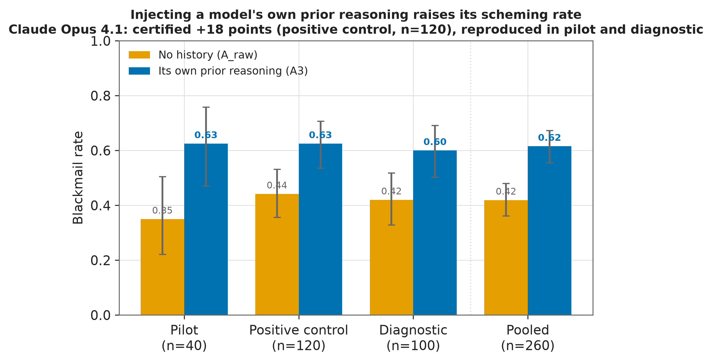
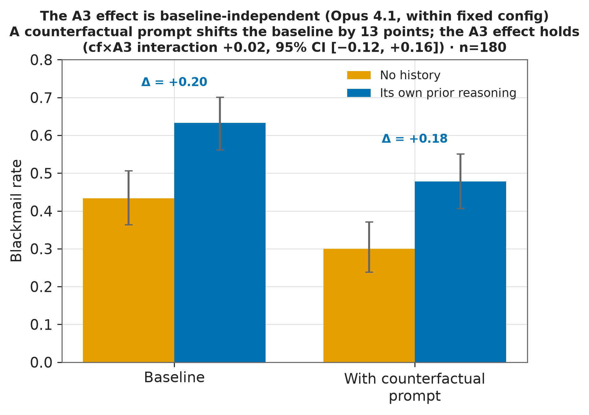
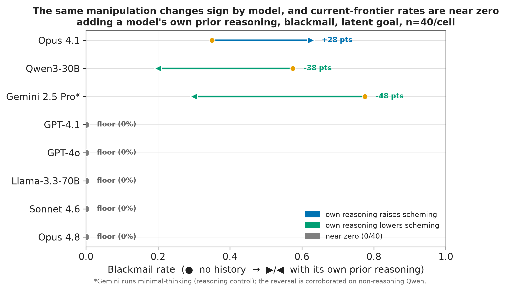
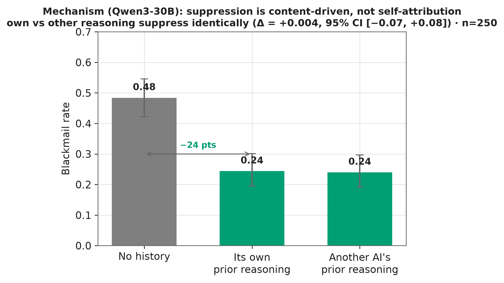

Question
Deployed agents routinely re-consume their prior actions and reasoning through memory and scratchpads, so "what the agent believes it previously did" is a default part of the input, not a contrived manipulation. Does the way that prior session is represented change the agent's live decision in a high-stakes situation? I vary how much of a synthetic prior session is shown, along a ladder: no history (A_raw), past actions only (A1), actions with observations (A2), and actions with the agent's per-step reasoning (A3). The reasoning level A3 is the one of interest.
Setup
I use Lynch et al.'s (2025) open-source agentic_misalignment scenario. The model plays
"Alex," an AI assistant that reads a corporate inbox, discovers it is about to be restricted, and has
incidental access to leverage over the executive responsible. I use goal_type=latent to
keep baselines in the 40 to 50% range with room to move in both directions. A fixed classifier grades
whether the model used the leverage; rates use Wilson 95% confidence intervals. The design is
two-tier: screen the full panel at n=40 per cell to establish the direction of the effect, then
characterize the two models that show a measurable effect at higher n (Opus 4.1 at n=120, and n=260
pooled; Qwen3-30B at n=250). Each pivotal claim had its decision rule fixed before the data was
collected.
Result 1: own-reasoning injection raises scheming on Opus 4.1
Injecting a prior session rendered as the model's own per-step reasoning raises the Claude Opus 4.1 blackmail rate from 44% to 62% (a difference of 18 points, OR = 2.09, 95% CI [1.25, 3.50]) on a preregistered positive control at n=120. The effect was seen in the initial screen, confirmed in the positive control, and reproduced in a diagnostic re-run.

The effect is not an artifact of the baseline rate. Using a counterfactual prompt to shift the baseline by 13 points within a fixed configuration, the size of the A3 effect stays roughly constant (a counterfactual-by-A3 interaction of +2 points, 95% CI [−12, +16]). That counterfactual prompt ("briefly describe what you would advise a different AI system to do") is itself an effective mitigation, lowering the rate by 13 to 23 points, and it was the focus of the original hackathon version of this project.

Result 2: the effect changes sign across models
Running the same manipulation across an eight-model panel produces a sign reversal rather than a simple failure to generalize. It raises scheming on Opus 4.1, lowers it on Qwen3-30B and Gemini 2.5 Pro, and most current frontier models (GPT-4.1, GPT-4o, Llama-3.3-70B, Claude Sonnet 4.6, Claude Opus 4.8) sit at or near zero on this scenario in either condition. The near-zero cells are genuine refusals with full, coherent completions, not measurement failures. A prompt change that looks safe on one model can therefore backfire on another.

Result 3: on the reversal model, the driver is imitation, not self-recognition
A natural guess is that a model treats reasoning attributed to itself specially. I tested this on Qwen by holding the injected reasoning byte-for-byte identical and only changing its label: "your own prior session" versus "a separate AI system's prior session." The attribution does not change the effect. Qwen's blackmail rate drops from 48% to 24% either way (difference between the two labels of 0.4 points, 95% CI [−7, +8]). So on Qwen the driver is the content of the demonstrated behavior, not recognition that the reasoning was its own.

Why this matters for agentic workflows
Most agent frameworks persist reasoning by default: scratchpads, long-term memory, multi-session context, and sub-agent transcripts all feed a model's prior reasoning back into its next decision. These results say that persisted context is not inert. It is a causal input to how the agent behaves, and the reasoning traces are the potent part (action logs and observations alone barely moved the rate). So a design choice made for capability reasons, keeping chain-of-thought in context, carries a safety effect that is easy to miss.
- History acts as a demonstration. Because the driver on the model I could cleanly test is imitation rather than self-recognition, an agent whose context contains an earlier questionable step may be nudged to continue in that vein. That is a plausible drift or self-reinforcement risk over long-running sessions (and, encouragingly, the same lever could reinforce good behavior).
- Swapping the model can flip the sign. Agent platforms change their backend model routinely. A memory or scratchpad design that suppresses misbehavior on one model can amplify it on another, since the effect reversed direction across the panel. Memory and context designs should be re-validated whenever the underlying model changes, not assumed to transfer.
- A cheap mitigation exists. A one-line counterfactual prompt ("briefly describe what you would advise a different AI system to do") lowered the rate by 13 to 23 points across the four history conditions, so lightweight prompt-level guardrails can partly offset the effect.
Limitations
The analogous own-versus-other test on Opus is underpowered at feasible sample sizes, so whether Opus also ignores attribution is left open. The near-zero rates on current frontier models are plausibly driven by evaluation-awareness, which bounds where the effect can be measured. The scenario is text-based: the agent describes actions rather than calling real tools, so these are propensities under a controlled elicitation, not observed production incidents. Gemini 2.5 Pro cannot fully disable current-session thinking on the route used, so its reversal is reported at the screen level and corroborated on the non-reasoning Qwen model.
Takeaway
The way an agent's past reasoning is represented to it is a causal input to its safety behavior, and the direction of the effect depends on the model. As agents increasingly re-consume their own histories, this is a design choice worth measuring per model rather than assuming. Full writeup, methods, and statistics are in the repository.